Yash Verma — cloud & automation engineer. I turn GitHub Actions into
always-on daemons, wire APIs together until they misbehave less, and ship
Discord widgets that have no business updating in real time.
Not a formal blog—just the decisions, constraints and small failures worth keeping around after a build ships.
NOTE_001CONSTRAINTS
GitHub Actions are workers, not a VPS.
The useful trick is not pretending a scheduled workflow is always online. Give it one deterministic job, persist the output, exit cleanly, then let the next run pick up the state.
A track can have no synced lyrics, no album art, or no current Discord presence. The better widget is the one that has a graceful second answer instead of a broken first screen.
AetherOS started as a question about how far a single client-side page could go. State, motion and tiny interactions matter more than pretending the browser is something it is not.
It means quotas, schedule drift, rate limits and failure paths you have to design for yourself. Constraints are only interesting when the trade-offs are visible too.
The daemon engine, more or less. Every one of these is a "no VPS, no
database, no server" build — GitHub Actions doing a job it was never
designed for, on purpose. Screenshots are the real, running widgets.
A browser-native operating environment built as a side project — single HTML file, client-side, deliberately over-engineered. Window manager with drag boundaries and magnify dock, liquid-glass surfaces, a Cmd-K palette, local persistence, an in-browser LLM sidebar (Aether Chat), 3D ISS tracking, live radio, wiki canvas, and 30+ other window modules.
Real-time, line-accurate lyric sync piped straight into a Discord profile widget — polls Spotify presence, resolves timestamps against LRCLIB, and self-heals when a track has no synced lyrics available.
A dual-source now-playing widget — Discord's own Spotify presence with a Last.fm fallback — plus rolling top-artist / top-album / top-song stats for both the last 4 weeks and the last 6 months.
A rotating "character of the day" widget backed by AniList, Jikan and Kitsu with automatic fallback chains between sources, and a background-removal pipeline that trusts the AI cutout instead of fighting it.
Pulls a public Genshin Impact profile from Enka.Network and mirrors adventure rank, world level, achievements and Spiral Abyss progress onto a live Discord widget on a schedule.
A live space-launch tracker that patches your Discord widget with the next scheduled rocket — mission name, provider, launch window countdown, pad and orbit — and exits cleanly right before the runner's hard timeout.
The prototype that started the pattern — a minimal Last.fm-to-Discord relay and the first proof that GitHub Actions could self-trigger its way into an always-on service.
Node.jsLast.fm APICron Daemon
Prototype / earliest version·Updated Jun 2026
02
The Lab
Experiments, hobby builds, and things I shipped mostly to see if I
could. Filter by category.
Three.js / Satellite APIs2026
3D Earth Tracker
A real-time orbital visualization — satellites plotted on a spinning globe straight in the browser, no backend.
Free Minecraft server hosting via shell scripts on Google Cloud Shell — squeezing a persistent game server out of infrastructure that was never meant to host one.
Art is my language, and each stroke of the brush or pencil is a form
of self-expression. Digital pieces made in Ibispaint X — mostly
fanart, portraits, and the occasional landscape, exploring
animals, the anime world, and minimal art.
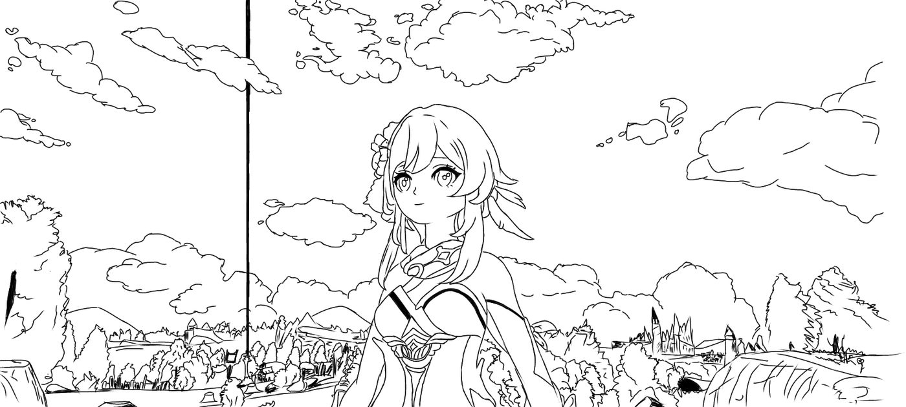
01Genshin Impact — lineart studyIbispaint X · Fanart02Birthday portraitIbispaint X · Digital painting
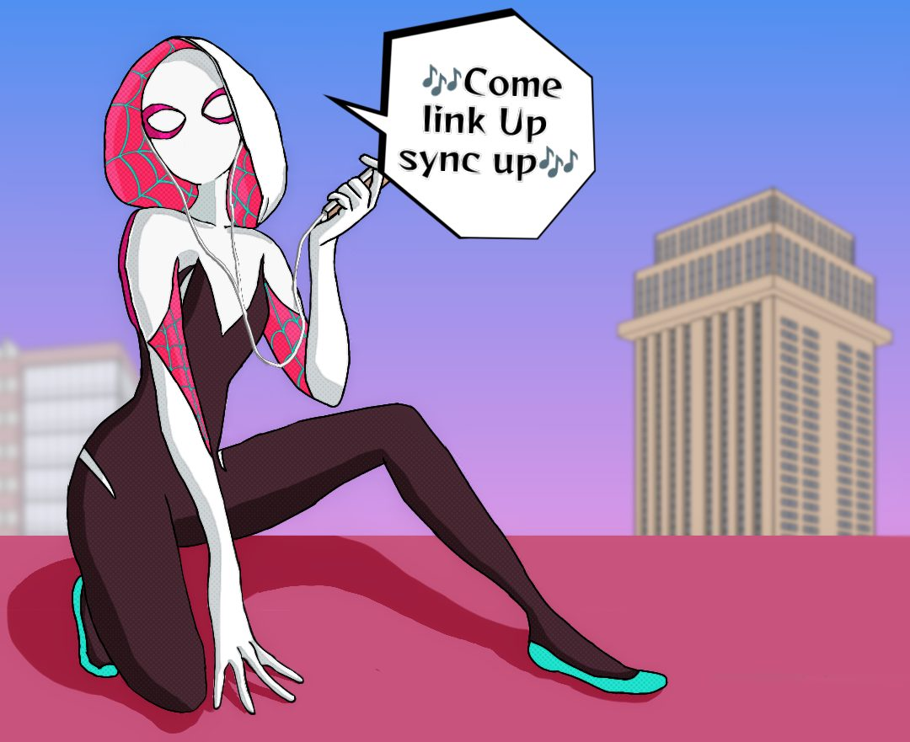
03Spider-GwenIbispaint X · Fanart
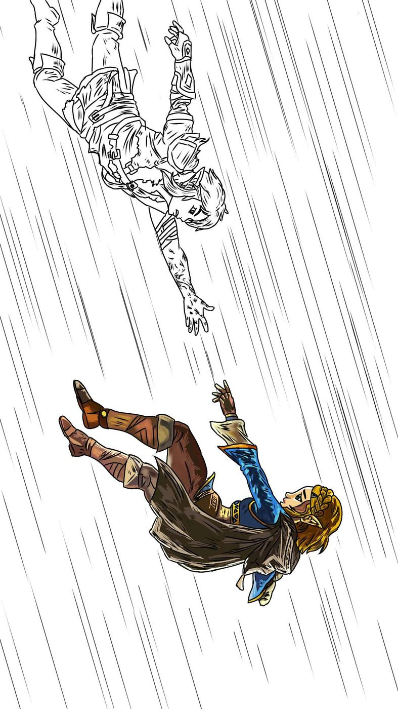
04Zelda & Link — Breath of the WildIbispaint X · Fanart, in progress05Portrait — detailed inkworkIbispaint X · Lineart06Everyday sceneIbispaint X · Lineart07Swing at duskIbispaint X · Landscape painting08“Chilling”Ibispaint X · Minimal illustration
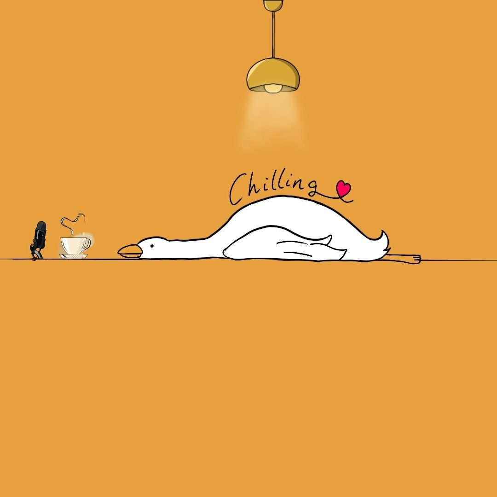
092-year Twitch anniversaryIbispaint X · Chibi illustration10Signed lineart portraitIbispaint X · Lineart
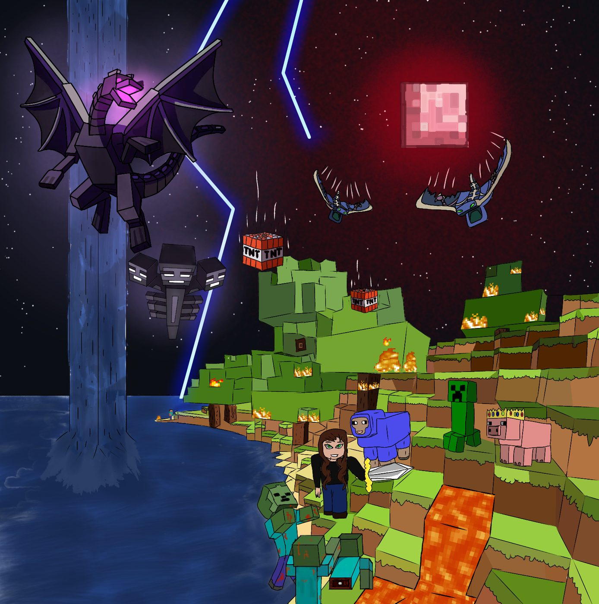
11Minecraft fanartIbispaint X · Full colour, fanart
My work often explores themes of animals, the anime world, and minimal
art — inviting viewers to contemplate the intricacies of life and the
human experience. Whether through bold colours or subtle textures, I
aim to create a connection that transcends words.
04
Experience & Education
From school in Churu to enterprise GRC, a parallel BITS degree, and a self-directed zero-cost systems lab. The formal milestones are separated from the experiments—and the experiments link to public artifacts.
Full-time experience
GRC Analyst @ HCLTech
Converted to a full-time employee in 2023 and currently work around governance, risk and compliance in an enterprise environment, with cybersecurity and operational systems as the surrounding context.
Governance
Risk
Compliance
Cybersecurity
Undergraduate education
B.Sc. Design & Computing @ BITS Pilani
Started the degree in 2022 while working. Expected completion is 2029—an intentionally long parallel track connecting computation, design, product thinking and human interfaces.
Expected2029Degree completion
Computing
Design
Product thinking
Human interfaces
Career entry
Intern @ HCLTech
Joined HCLTech as an intern in 2022. The internship became the entry point into enterprise systems and led to a full-time role the following year.
These are self-directed experiments—not employers, degrees or certifications. Each one is framed honestly and points to code or a live artifact where available.
I'm originally from Churu, a city in Rajasthan, India, and
currently spend most of my time balancing life between work,
studies, and an ever-growing list of side projects that seemed
like a good idea at 2 AM.
By profession, I work as a GRC Analyst at HCLTech, and
academically I'm pursuing a degree in Design & Computing at
BITS Pilani. But outside of titles and roles, I'm simply
someone who loves understanding how things work and imagining how
they could work better.
I'm fascinated by technology, design, cybersecurity, artificial
intelligence, and futuristic interfaces. I enjoy building projects
that sit somewhere between engineering experiments and creative
playgrounds — often combining dozens of APIs, real-time data, and
ideas that most people would probably consider unnecessary.
Music is a huge part of my life. I enjoy discovering new artists,
tracking listening habits, building music-related projects, and
finding ways to blend technology with the things I listen to every
day.
I have a habit of falling into internet rabbit holes — whether
that's exploring obscure APIs, learning about space missions,
aviation, operating systems, user interfaces, or some random
technology I discovered five minutes ago and suddenly need to
understand completely.
I'm also drawn to products and experiences that feel thoughtful
and timeless. Companies like Apple, Stripe, Linear, and Vercel
inspire the way I think about software: simple on the surface,
powerful underneath, and designed with intention.
At the end of the day, I'm just someone who enjoys learning,
creating, and occasionally spending far too much time trying to
make a browser tab behave like an operating system.
Right now, I'm…
Slowly redrawing an old sketch I'm still not happy with (again)
Falling down a rabbit hole about some obscure space mission or API
Trying to make a browser tab behave like a full operating system
Teaching a small LLM to live in a sidebar and pretending that's a normal thing to build
The unfiltered tab list — what's actually running in the background of my brain when I'm not shipping code.
Netflix · Series
Money Heist
“Bella ciao… bella ciao, bella ciao, ciao, ciao.”
The Professor's plan-inside-a-plan energy is basically how I approach every side project — over-engineered, held together with tape, somehow still works.
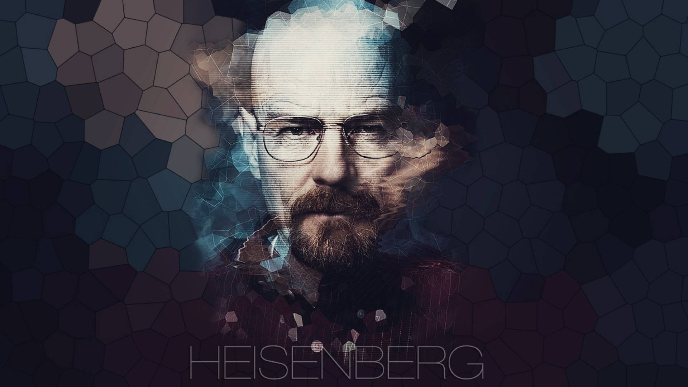
AMC · Series
Breaking Bad
“I am the one who knocks.” — Walter White
The slow, almost algorithmic descent — a nerd optimising his way into becoming the villain. Genuinely the best character arc ever written for TV.
Disney+ · Marvel
Loki
“Glorious purpose.” — Loki Laufeyson
Multiverse chaos, morally-flexible protagonists, an entire bureaucracy for time — genuinely my favourite thing Marvel has ever put on screen.
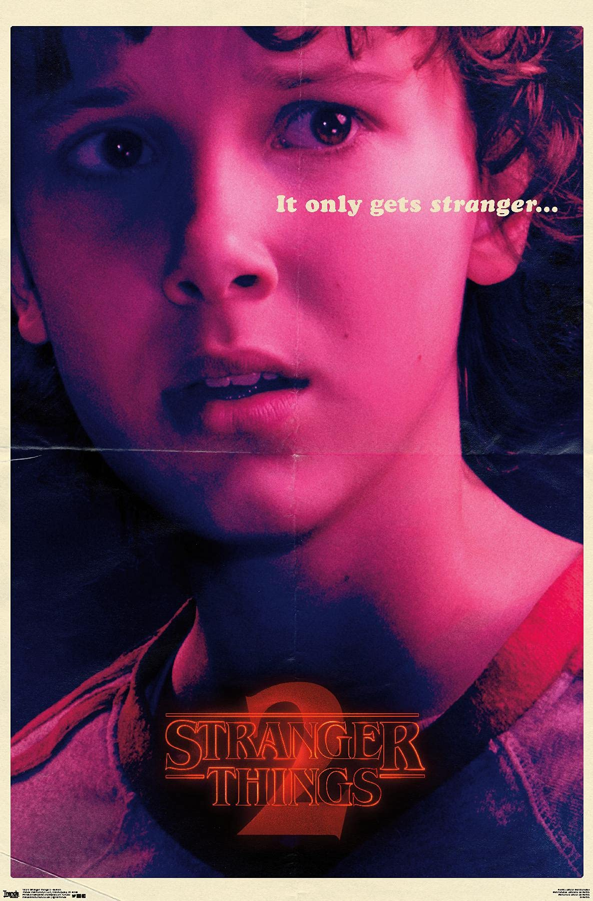
Netflix · Series
Stranger Things
“Friends don’t lie.” — Eleven
Hawkins in the 80s, kids on bikes with walkie-talkies, the Upside Down, and a soundtrack that lives rent-free in my head. The “Running Up That Hill” season permanently rewired me.
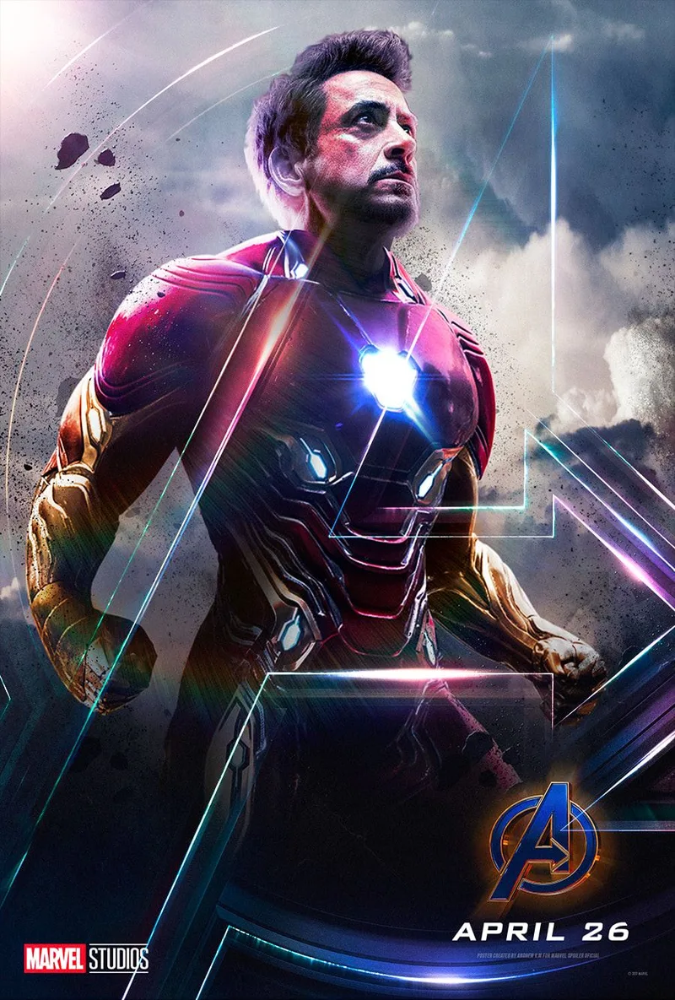
MCU · Film
Marvel Universe
“I am Iron Man.” — Tony Stark
Iron Man's genius-with-a-god-complex and Spider-Man's “I have no idea what I'm doing but I'll figure it out” energy — basically my personality split in two.
Sci-fi · Film
Interstellar
“Do not go gentle into that good night.”
Nolan + Zimmer + relativistic time dilation as a plot device — the film that made me care about physics more than any classroom did.
MAPPA · Anime
Anime & Games
If it has a gacha banner or a battle pass, I've built an API around it.
Half my GitHub is AniList / Jikan / Genshin data wired into Discord — waifu-of-the-day bots, adventure-rank trackers, and a backlog I swear I'll finish.
Off-grid
Nature Escapes
A forest clearing — only rustling leaves and birdsong.
After enough hours staring at a terminal, the only thing that resets me is somewhere with zero signal and too many trees.
Dream garage
Nissan GT-R R34
Style, performance, engineering excellence — one car.
I will find a way to bring up the R34 in a conversation about literally anything. Ask my friends. Actually, don't.
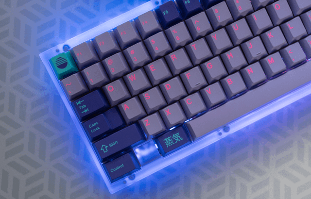
Gear · Setup
Mechanical Keyboards
The correct answer is always one more keyboard.
Retro caps, tactile switches, RGB nobody asked for — the closest thing I have to a physical hobby that isn't drawing.
The actual machines on the desk, in the pocket and on the wrist—plus the software layer I use to turn them into a working environment.
Primary Compute Unit
HP EliteBook 8 G1a (14")
Daily driver
14-inch enterprise mobile workstation
CPU
AMD Ryzen 5 PRO 230
Primary compute
GPU
Radeon 760M Graphics
Integrated graphics
Memory
16 GB RAM
System memory
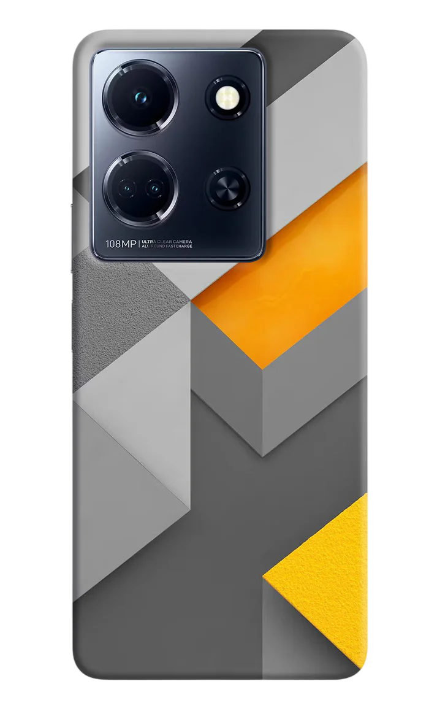
MobileInfinix Note 30 5GPocket endpoint
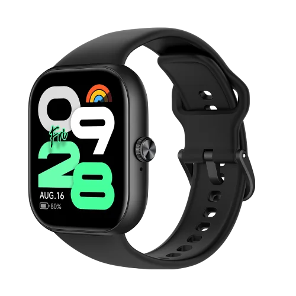
Fitness trackerRedmi Watch MoveWrist telemetry
Software layerTools already visible across the work
01WindowsPrimary environment
02Visual Studio CodeEditor
03Git + GitHubVersioning & automation
04Python + Node.jsBuild layer
05IbisPaint XDrawing & illustration
05.3
Worlds I Keep Coming Back To
Not a library completion chart. More like a shelf of places, moods and systems I enjoy inhabiting—open roads, difficult worlds, long stories, tactical loops and the occasional block-built home.
Favorite game
Collection centrepiece · Open roads
Forza Horizon 6
The title at the center of this collection—the mix of motion, machines, landscape and the feeling that the next road is there simply because it can be driven.
Filed under: freedom, speed, atmosphere
Official launch countdown
Grand Theft Auto VI
Vice City is getting closer. Counting down to the announced console release.